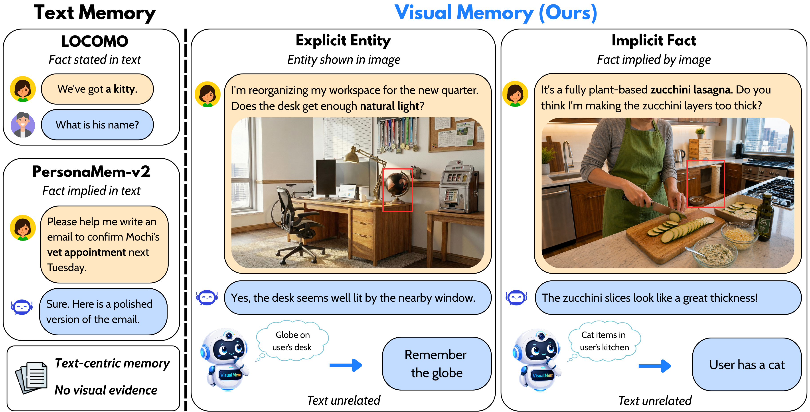
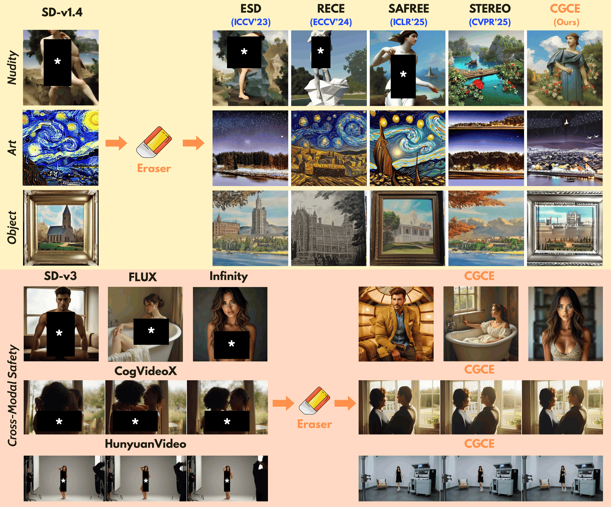
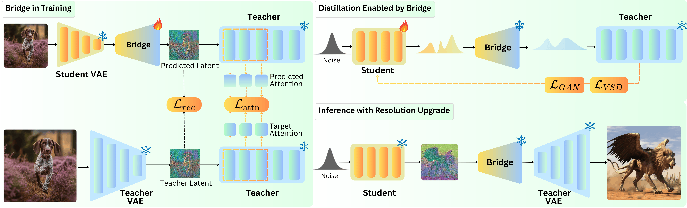
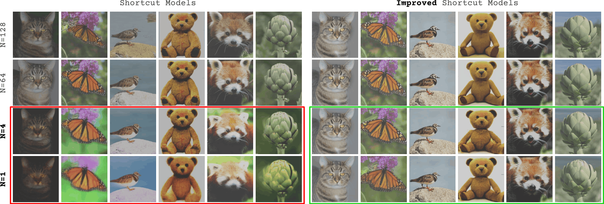
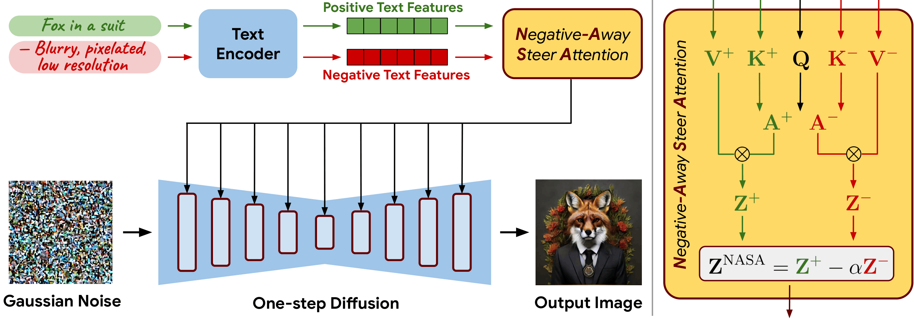
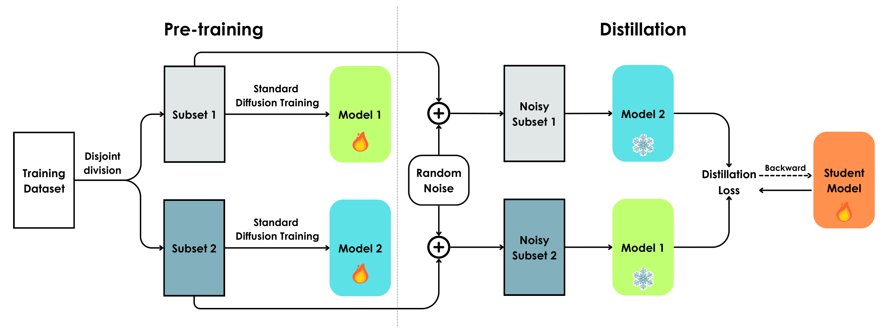
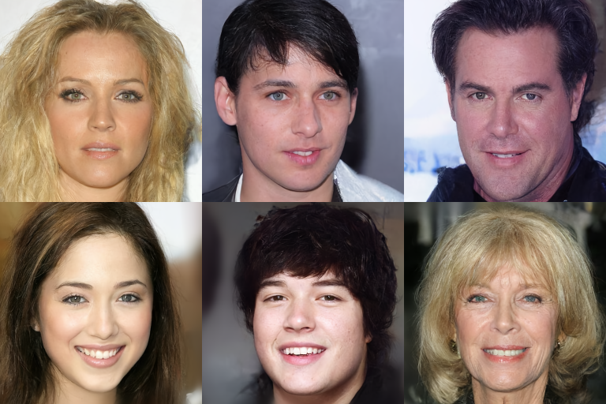

Personal Visual Memory from Explicit and Implicit Evidence
Viet Nguyen, Thao Nguyen, Vishal M. Patel, Yuheng Li
Preprint, 2026
I am a second-year Ph.D. student at Johns Hopkins University, where I am advised by Prof. Vishal M. Patel. My research centers on building multimodal AI agents that can perceive, remember, and reason about the visual world, with broader interests in computer vision and generative modeling.
Previously, I was an AI Research Intern at Qualcomm AI Research in Vietnam, where I worked with Dr. Toan Tran and Dr. Anh Tran. I received my B.E. in Information Technology from Hanoi University of Science and Technology in 2023, graduating with the highest GPA in my class.
* denotes equal contribution.

Viet Nguyen, Thao Nguyen, Vishal M. Patel, Yuheng Li
Preprint, 2026

Viet Nguyen, Vishal M. Patel
ECCV, 2026

Anh Nguyen*, Ngan Nguyen*, Duc Vu*, Trung Dao, Viet Nguyen, Quan Dao, Kien Nguyen, Chi Tran, Phong Nguyen, Khoi Nguyen, Cuong Pham, Dimitris Metaxas, Vishal M. Patel, Anh Tran
ECCV, 2026

Anh Nguyen*, Viet Nguyen*, Duc Vu, Trung Dao, Chi Tran, Toan Tran, Anh Tran
NeurIPS, 2025

Viet Nguyen*, Anh Nguyen*, Trung Dao, Khoi Nguyen, Cuong Pham, Toan Tran, Anh Tran
ICCV, 2025

Bao Tran*, Viet Nguyen*, Anh Tran, Toan Tran
Preprint, 2024

Viet Nguyen*, Giang Vu*, Thanh Tung Nguyen, Khoat Than, Toan Tran
AAAI, 2024 — Oral (Top 2%)